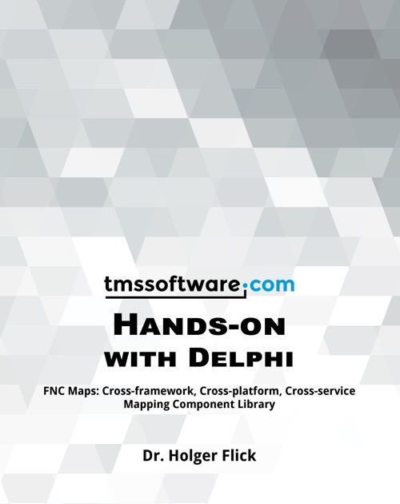

Hands-on with Delphi - Volume 2
Published by : FlixEngineering
Writed by : Dr Holger Flick
Published date : 26/08/2020
ISBN-13 : 9798643845973
Language :  English
English
Web site : https://www.holgerscode.com/books/2021/03/27/fnc-maps/
About Hands-on with Delphi - Volume 2
Learn to build modern Delphi applications for multiple platformswith maps and geographic focus by example!
Delphi comes with native compilers for Windows, Linux, Apple macOS, iOS, and Android. TMS Software has been offering software components and products specifically designed for Delphi developers since the first version of Delphi. From recent seminars, conferences, and events, TMS realized that practical examples how to make use of their components and products have the greatest learning effect. This idea led to the Hands-on series. In this second book, applications that make use of FNC Maps are front and center. It is a new component-based framework to access mapping and other geographic services from Google Maps, TomTom, Microsoft Bing Maps, Microsoft Azure, Mapbox, Here, and OpenLayers. Be it in the VCL, FireMonkey, or LCL, using the framework is as easy as dropping a component on your form. It delivers Rapid Application Development at its best. All topics are explained with examples that can be transferred to your specific use case easily.
Get to know the FNC framework, FNC Core, and FNC Maps in a nutshell.
Learn about FNC Maps in detail: You will find dozens of hands-on examples from installation to modern multi-tier applications with large databases, web services, web, and desktop clients.
Annotate maps and visualize data using markers with clustering, lines, shapes, pop-up windows and routes.
Build applications that can handle any geographical data and interact with other Geographic Information Services (GIS). Load GPX tracks from GPS devices, GeoJSON shapes, and Google Earth-specific KML layers.
Include other mapping services to get directions with turn-by-turn instructions, to geocode addresses, and to determine your geolocation.
Create reports with a customizable template based on data from maps and databases.
Allow users to freely customize maps using events or interactive markers and shapes.
Examples use TMS FlexCel, FNC Core, VCL UI Pack, WEB Core, Cryptography Pack, and XData. Embarcadero Delphi Sydney 10.4 or newer suggested. Trial versions and free developer accounts of service providers suffice to run the examples. SQLite database examples are ready for use without server setup. Basics for reporting, web, and XData explained in “TMS WEB Core: Web Application Development with Delphi” and previous Hands-On titles are not included again but referenced.
Where to buy ?
This book has the ISBN13 "9798643845973".
If it is still available for sale, you can order it in your favorite bookstore, by its publisher or online at
Amazon CA,
Amazon FR,
Amazon JP,
Amazon UK or
Amazon USA depending on your country.